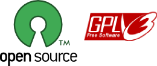
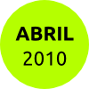
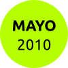
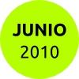
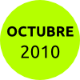
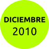
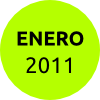
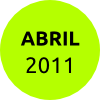
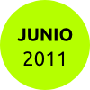

Línea de tiempo
Cidadania echa en falta una herramienta en internet para apoyar los procesos de participación.
Cidadania contacta con Algueirada para analizar qué soluciones están disponibles.

Iniciamos un estudio de las diferentes herramientas de e-participación, con el apoyo de la Consellería de Traballo de la Xunta de Galicia.

En el estudio descubrimos esfuerzos semejantes que nos son de mucha utilidad.

Acabamos el estudio: ahora sabemos la herramienta que queremos, y sabemos que tenemos que construirla casi desde cero.

Incorporamos un técnico desarrollador informático, gracias a la colaboración de la Fundación Nova Caixa Galicia.

Ultimamos los trabajos de puesta en marcha de procesos y gestión de usuarios y usuarias.

Programamos las fases de desarrollo para ir testando la herramienta en el proceso de presupuestos participativos de Ferrol.
Desarrollamos el módulo de debates.
Se incorpora el trabajo de control externo en accesibilidad y errores, por parte del CESGA, Centro de Supercomputación de Galicia.

Incorporación de mejoras de las dos fuentes de contraste: la técnica y la que nos viene de los presupuestos participativos de Ferrol, donde se constituye una comisión de e-participación formada por internatutas de la ciudad.
En el estudio descubrimos esfuerzos semejantes que nos son de mucha utilidad.
